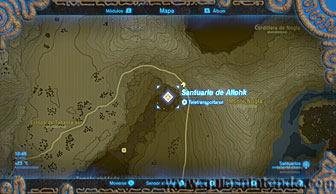
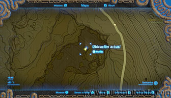
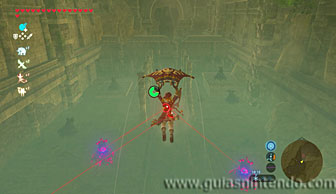
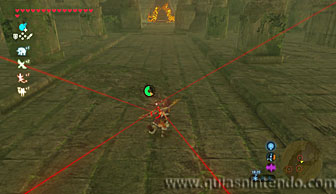

Puedes llegar a él en cuanto llegues a la región de la Torre del bosque, sin embargo, debes encontrar la entrada dentro del Templo olvidado, situado en lo más profundo del Cañón de Tanagar.

Una vez en el cañón debes ir a la parte más baja hasta ver la entrada. La reconocerás rápidamente porque hay varios guardianes custodiando la entrada al templo. En cuanto te asomes te apuntarán desde distintas posiciones. Puedes pararte a destruirlos si quieres, pero lo mejor es que pases de largo sin pararte. Si usas las corrientes de aire que hay en el interior podrás ir avanzando rápidamente y los rayos no te darán. Si ves que alguno te apunta desde la espalda puedes dejar de planear unos segundos y volver a coger altura con las corrientes. Continúa planeando en línea recta hasta ver la entrada. Este el momento más vulnerable, ya que si te quedas sin resistencia pueden alcanzarte antes de llegar al santuario.

Una vez dentro solo tienes que abrir un cofre con un mandoble de fuego y después continúa hasta el altar. Cuando llegues a él podrás examinarlo para obtener un símbolo de valía.